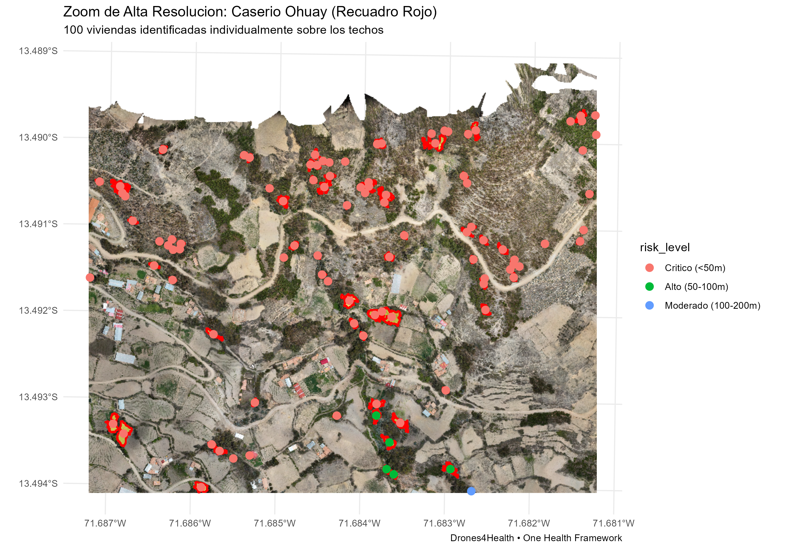

Case Study 1: Malaria & Micro-Hydrology - Peruvian Amazon
Source:vignettes/case1_peru_amazon_malaria.Rmd
case1_peru_amazon_malaria.Rmd1. Epidemiological Context & Landscape Ecology
In the Peruvian Amazon, Anopheles darlingi is the primary vector driving endemic malaria transmission (Plasmodium vivax and P. falciparum).
Forests are characterized by: 1. Micro-topographic drainage sinks and slow-moving stream margins. 2. Artificial water depressions created by illegal gold mining pits and fish farming ponds. 3. Peridomestic vector flight buffers from riverine indigenous and rural settlements.
2. Targeted Indicator Suite
| Indicator | Implementation | Significance |
|---|---|---|
| NDVI / NDRE |
d4h_ndvi(), d4h_ndre()
|
Quantifies dense forest tree and plant shading that shelters adult Anopheles during hot diurnal hours. |
| NDWI / IRHE |
d4h_ndwi(), d4h_irhe()
|
Detects open water surfaces and turbid, stagnant water bodies in deforested clearings. |
| Slope & TWI |
d4h_slope(), d4h_twi()
|
Identifies flat terrain with high wetness accumulation prone to persistent flooding. |
| Buffer Focal Analysis | d4h_indicator_buffer() |
Limits statistical computation to the biologically relevant vector foraging radius around households. |
| Euclidean Exposure Decay | d4h_distance_to_risk() |
Computes transmission exposure as an exponential decay function . |
3. Workflow
3.1 Libraries & Spatial Setup
We verify and load the fundamental geospatial packages and
drones4health dependencies required for
micro-epidemiological remote sensing:
library(drones4health)
library(terra)
library(sf)
library(ggplot2)
# File paths to UAV orthomosaics and multispectral bands
img_dir <- "data/peru_amazon"
path_rgb <- file.path(img_dir, "Ohuay_D.tif") # High-resolution Orthomosaic
path_nir <- file.path(img_dir, "Ohuay_NIR.tif") # Near Infrared
path_r <- file.path(img_dir, "Ohuay_R.tif") # Red
path_re <- file.path(img_dir, "Ohuay_RE.tif") # Red Edge
xlsx_houses <- "new_located_houses.xlsx" # Georeferenced households3.2 Peridomestic Exposure Buffers
We evaluate focal vegetative shelter (NDVI) within the biological flight radius () surrounding indigenous and rural households:
# Focal NDVI Buffer around riverine houses (3 grid cells of 50m = 150m buffer)
res_buffer <- d4h_indicator_buffer(
indicator = "NDVI",
houses = xlsx_houses,
radius = 3, # 3 grid cells
cell_size = 50, # 50m cell size = 150m buffer
nir = path_nir,
red = path_r,
palette = "viridis",
title = "Malaria Vector Flight Range (150m): Focal NDVI & River Margins"
)
Figure 3.1: Peridomestic focal micro-buffer mapping (150m) over UAV orthomosaic showing vegetative coverage hotspots and proximity to dwellings.
3.3 Surface Water & Larval Habitat Segmentation
We extract stagnant water bodies, alluvial drainage pits, and micro-ponds from spectral thresholding:
# Compute continuous NDVI
r_ndvi <- d4h_ndvi(nir = path_nir, red = path_r)
# Segment potential larval breeding depressions
water_bodies <- d4h_segment_water(
raster_in = r_ndvi,
rgb_raster = path_rgb,
max_water_brightness = 90.0, # Avoid bright metal roofs misclassification
threshold = -0.15,
min_area_m2 = 15.0 # Detect small larvae habitats
)3.4 Distance-Decay Exposure Analysis
We quantify the spatial exposure gradient from households to the nearest vector larval habitats using an exponential decay model:
# Proximity exposure from household to larval habitats
household_exposure <- d4h_distance_to_risk(
buildings = res_buffer$houses,
sources = water_bodies,
decay_lambda = 100.0 # 100m mean dispersal parameter
)
# Frequency table of exposure categories
table(household_exposure$risk_level)#> Household Exposure Level:
#> Critical (<50m) : 30 houses (54.5%)
#> High (50-100m) : 16 houses (29.1%)
#> Moderate (100-200m): 3 houses (5.5%)
#> Low (>200m) : 6 houses (10.9%)3.5 Executive Summary & Operational Reporting
# Export multi-moment summary and operational metrics
d4h_export_summary(
raster_in = res_buffer$raster,
output_file = "Malaria_Exposure_Report.xlsx",
cell_size = 100
)
# Display tabular multi-moment summary
print(d4h_executive_summary(r_ndvi, by = "general"))#> ── Executive Summary: Zonal Micro-Environmental Exposure ──
#> Total Area Analyzed: 184.2 ha
#> Mean Exposure Index: 0.642 (SD: 0.184)
#> 90th Percentile Exposure: 0.812
#> Critical Priority Zones: 24 hotspots identified